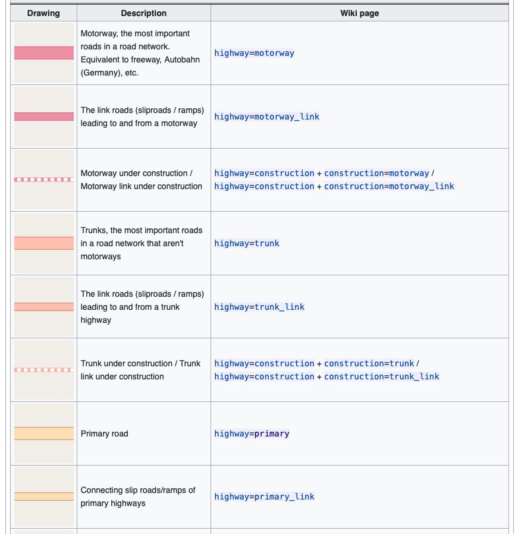
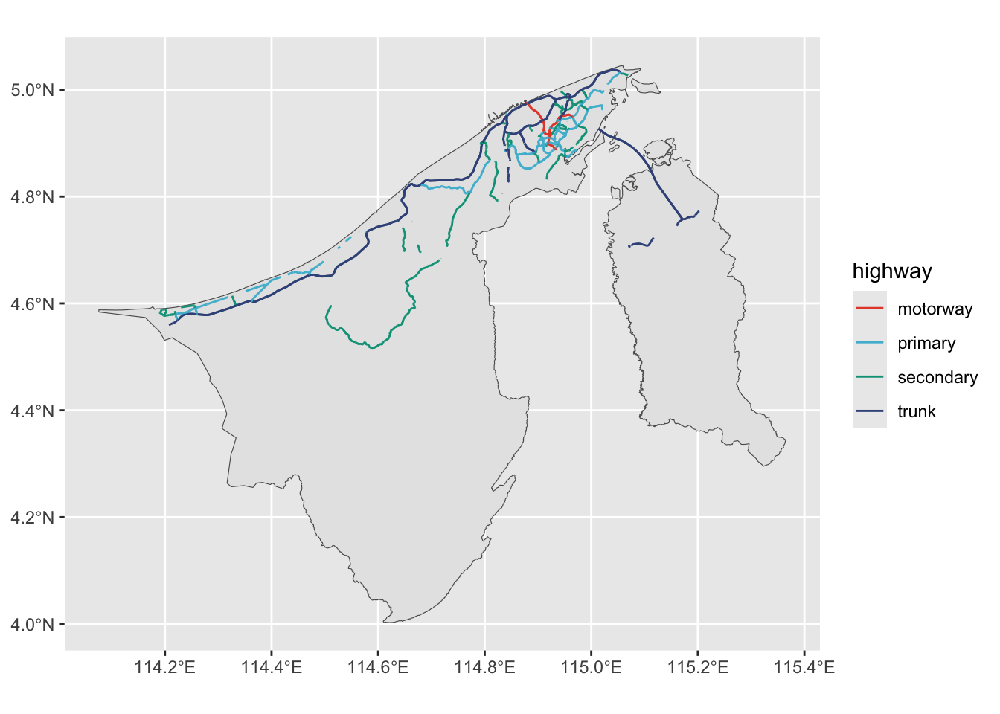

library(tidyverse)
# remotes::install_github("propertypricebn/bruneimap")
library(bruneimap)
library(ggrepel)
library(kernlab)
library(osrm)
library(osmdata)3 Geographical Information System (GIS) data
Libraries needed:
More info:
Note
The {bruneimap} package contains the following data sets:
dis_sf: Brunei districts geometries.mukim_sf: Brunei mukim geometries.kpg_sf: Brunei kampong geometries.brn_df: Brunei outline geometries.bn_census2021: Brunei 2021 census data.
3.1 Introduction
What we’ll learn
- Types of GIS data and how these are handled in R.
- Difference between spatial and non-spatial data analysis.
- Importance of geocoding your data for spatial analysis.
Roughly speaking, there are 4 types of GIS data.
- Points
- Having \((X, Y)\) coordinates (latitude, longitude, or projected coordinates, and are “zero-dimensional”.
- E.g. shopping malls, hospitals, outbreaks, etc.
- Lines
- A collection of points that form a path or a boundary. Has length.
- E.g. roads, rivers, pipelines, etc.
- Polygons
- A closed area made up of line segments or curves.
- E.g. countries, districts, buildings, etc.
- Raster
- Pixelated (or gridded) data where each pixel is associated with a geographical area and some measurement.
- E.g. satellite images, elevation data, etc.
The first three are usually referred to as vector data. GIS data can be stored in various formats such as .shp or .geojson. The handling of GIS data (at least vector type data) is facilitated by the {sf} package (Pebesma and Bivand 2023) which uses the simple features standard.
Note
Simple features refers to a formal standard (ISO 19125-1:2004) that describes how objects in the real world can be represented in computers, with emphasis on the spatial geometry of these objects.
It’s helpful to think about the shape of this spatial data set. As an example, here’s a random slice of 10 kampong-level population data for Brunei:
left_join(
kpg_sf,
bn_census2021,
join_by(id, kampong, mukim, district)
) |>
select(
kampong, district, population, geometry
) |>
slice_sample(n = 10)Simple feature collection with 10 features and 3 fields
Geometry type: POLYGON
Dimension: XY
Bounding box: xmin: 114.3221 ymin: 4.130862 xmax: 115.2182 ymax: 4.964874
Geodetic CRS: WGS 84
# A tibble: 10 × 4
kampong district population geometry
<chr> <chr> <dbl> <POLYGON [°]>
1 Kg. Sekurop Temburong NA ((115.2135 4.702038, 115.2…
2 Kg. Kandang Tutong 300 ((114.649 4.785566, 114.64…
3 Kg. Long Mayan Tutong 223 ((114.6515 4.559928, 114.6…
4 Kg. Pangkalan Sibabau Brunei Muara 876 ((115.0402 4.962929, 115.0…
5 Kg. Kasat Brunei Muara 1146 ((114.9598 4.848516, 114.9…
6 Kg. Batang Perhentian Brunei Muara 346 ((114.8143 4.769514, 114.8…
7 Kg. Mendaram Kecil Belait 58 ((114.4898 4.339776, 114.4…
8 Kg. Kulapis Brunei Muara 1986 ((114.8251 4.86484, 114.82…
9 Kg. Dungun Belait 5 ((114.8444 4.315076, 114.8…
10 Kg. Perpindahan Mata-Mata Brunei Muara 2189 ((114.885 4.892944, 114.88…Spatial data analysis must have these two components:
- The study variables (in the above example, this is population data).
- GIS data regarding that study variable.
If we only have 1 without 2, then it really is just a regular data analysis (stating the obvious). Adding the GIS data is a process called “geocoding” the data points.
Note
In R, geocoding using {tidyverse} can be achieved using the dplyr::left_join() or similar xxx_join() family of functions.
3.2 (MULTI)POINT data
What we’ll learn
- Loading data sets in R using
readr::read_csv(). - Identifying data types and their implications.
Use the data from Jaafar and Sukri (2023) on the physicochemical characteristics and texture classification of soil in Bornean tropical heath forests affected by exotic Acacia mangium. There are three datasets provided.
- GIS data (WGS84 coordinates) of all study plots.
- Soil physicochemical property data. This contains details of soil physical, chemical, nutrient concentration of the three habits studied.
- Soil texture classification. Provides details on the classification of the soil texture in the habitats studied.
We will first load the data sets in R.
# Load the data sets
soil_gps <- read_csv(
"data/8389823/GPS - Revised.csv",
# IMPORTANT!!! The csv file has latin1 encoding as opposed to UTF-8
locale = readr::locale(encoding = "latin1")
)
soil_physico <- read_csv("data/8389823/Soil physicochemical properties.csv")
soil_texture <- read_csv("data/8389823/Soil texture classification.csv")3.2.1 Clean up the point data
What we’ll learn
- Highlighting the need for cleaning and preprocessing data.
- Using
glimpse()to peek at the data. - Using
mutate()to change stuff in the data set. - Using
str()to look at the structure of an R object.
Let’s take a look at the point data set.
glimpse(soil_gps)Rows: 18
Columns: 5
$ Forest_type <chr> "Kerangas", "Kerangas", "Kerangas", "Kerangas", "Kerangas…
$ Habitat_type <chr> "Intact", "Intact", "Intact", "Intact", "Intact", "Intact…
$ Plot_name <chr> "KU1", "KU2", "KU3", "KU4", "KU5", "KU6", "KI1", "KI2", "…
$ Latitude <chr> "4° 35' 53.40\"N", "4° 35' 38.37\"N", "4° 35' 53.89\"N", …
$ Longitude <chr> "114° 30' 39.09\"E", "114° 31' 05.89\"E", "114° 30' 38.90…The first three columns are essentially the identifiers of the plots (forest type, habitat type, and the unique identification code for the study plot). However, the latitude and longitude needs a bit of cleaning up, because it’s currently in character format. This needs to be in a formal Degree Minute Second DMS class that R can understand. For this we will use the sp::char2dms() function.
As an example let’s take a look at the first latitude.
x <- soil_gps$Latitude[1]
x[1] "4° 35' 53.40\"N"# convert it using sp::char2dms() function
x <- sp::char2dms(x, chd = "°")
x[1] 4d35'53.4"Nstr(x)Formal class 'DMS' [package "sp"] with 5 slots
..@ WS : logi FALSE
..@ deg: int 4
..@ min: int 35
..@ sec: num 53.4
..@ NS : logi TRUEThis is a special class that R understands as being a latitude from Earth. To convert it to decimal, we just do as.numeric():
as.numeric(x)[1] 4.598167Now let’s do this for all the values in the soil_gps data. We will use the dplyr::mutate() function in a pipeline.
soil_gps <-
soil_gps |>
mutate(
Latitude = as.numeric(sp::char2dms(Latitude, chd = "°")),
Longitude = as.numeric(sp::char2dms(Longitude, chd = "°"))
)
soil_gps# A tibble: 18 × 5
Forest_type Habitat_type Plot_name Latitude Longitude
<chr> <chr> <chr> <dbl> <dbl>
1 Kerangas Intact KU1 4.60 115.
2 Kerangas Intact KU2 4.59 115.
3 Kerangas Intact KU3 4.60 115.
4 Kerangas Intact KU4 4.63 114.
5 Kerangas Intact KU5 4.60 115.
6 Kerangas Intact KU6 4.60 115.
7 Kerangas Invaded KI1 4.59 115.
8 Kerangas Invaded KI2 4.59 115.
9 Kerangas Invaded KI3 4.59 115.
10 Kerangas Invaded KI4 4.59 115.
11 Kerangas Invaded KI5 4.59 115.
12 Kerangas Invaded KI6 4.59 115.
13 Kerangas Plantation AP1 4.59 115.
14 Kerangas Plantation AP2 4.59 115.
15 Kerangas Plantation AP3 4.59 115.
16 Kerangas Plantation AP4 4.59 115.
17 Kerangas Plantation AP5 4.59 115.
18 Kerangas Plantation AP6 4.59 115.3.2.2 Preliminary plot of the data
What we’ll learn
- Structure of a
ggplot()(grammar of graphics). - Using
geom_sf()to plot the GIS data, and adding points usinggeom_point().
Using the data contained in the {bruneimap} package, we can plot the study areas on a map of Brunei. Use either the brn_sf, dis_sf, mkm_sf or kpg_sf data sets.
ggplot(brn_sf) +
geom_sf() +
geom_point(data = soil_gps, aes(Longitude, Latitude)) We can zoom in a bit… but we have to find out manually the correct bounding box. To do this, we can either:
- Manually find the minimum and maximum values of the latitude and longitude.
- Convert the
soil_gpsdata set to ansfobject and use thest_bbox()function.
# Manual way
c(
xmin = min(soil_gps$Longitude), xmax = max(soil_gps$Longitude),
ymin = min(soil_gps$Latitude), ymax = max(soil_gps$Latitude)
) xmin xmax ymin ymax
114.473356 114.529297 4.592817 4.630242 # Using the sf object
soil_sf <- st_as_sf(soil_gps, coords = c("Longitude", "Latitude"), crs = 4326)
st_bbox(soil_sf) xmin ymin xmax ymax
114.473356 4.592817 114.529297 4.630242 Now that we’ve found the bound box, we can plot better:
ggplot(mkm_sf) +
geom_sf() +
geom_sf(data = dis_sf, fill = NA, col = "black", linewidth = 1) +
geom_point(data = soil_gps, aes(Longitude, Latitude)) +
geom_text_repel(
data = soil_gps,
aes(Longitude, Latitude, label = Plot_name),
box.padding = 0.5,
max.overlaps = 30
) +
coord_sf(
xlim = c(114.4, 114.6),
ylim = c(4.5, 4.7)
)3.2.3 Merge with the study data
What we’ll learn
- Using
left_join()to merge two data sets together. - Using
geom_jitter()to plot the study variables that are overlapping.
Let’s take a look at the data set.
glimpse(soil_physico)Rows: 144
Columns: 16
$ Habitat_type <chr> "Intact", "Intact", "Intact", "Intact", "Int…
$ Plot_name <chr> "KU1", "KU1", "KU1", "KU1", "KU1", "KU1", "K…
$ Subplot_name <chr> "A", "A", "B", "B", "C", "C", "D", "D", "A",…
$ Soil_depth <chr> "0-15", "30-50", "0-15", "30-50", "0-15", "3…
$ Nitrogen <dbl> 0.617, 0.188, 0.663, 0.200, 0.465, 0.255, 0.…
$ Phosphorus <dbl> 0.248, 0.129, 0.259, 0.295, 0.172, 0.145, 0.…
$ Magnesium <dbl> 0.000, 0.045, 0.054, 0.035, 0.079, 0.043, 0.…
$ Calcium <dbl> 0.167, 0.187, 0.148, 0.113, 0.253, 0.229, 0.…
$ Potassium <dbl> 0.059, 0.037, 0.054, 0.022, 0.098, 0.033, 0.…
$ Exchangable_magnesium <dbl> 0.009, 0.004, 0.007, 0.005, 0.029, 0.014, 0.…
$ Exchangable_calcium <dbl> 0.010, 0.009, 0.008, 0.009, 0.109, 0.041, 0.…
$ Exchangable_potassium <dbl> 0.101, 0.085, 0.092, 0.087, 0.101, 0.090, 0.…
$ Available_phosphorus <dbl> 0.012, 0.012, 0.013, 0.012, 0.013, 0.014, 0.…
$ pH <dbl> 2.3, 2.7, 2.0, 2.0, 2.6, 2.5, 2.3, 2.1, 1.0,…
$ Gravimetric_water_content <dbl> 5.911, 3.560, 10.860, 5.082, 6.963, 4.549, 5…
$ Organic_matter <dbl> 4.559, 1.399, 4.523, 2.309, 3.131, 2.209, 3.…glimpse(soil_texture)Rows: 144
Columns: 8
$ Habitat_type <chr> "Intact", "Intact", "Intact", "Intact", "Intact…
$ Plot_name <chr> "KU1", "KU1", "KU1", "KU1", "KU2", "KU2", "KU2"…
$ Subplot_name <chr> "A", "B", "C", "D", "A", "B", "C", "D", "A", "B…
$ Soil_depth <chr> "0-15", "0-15", "0-15", "0-15", "0-15", "0-15",…
$ Clay <dbl> 0.0, 0.0, 0.0, 0.0, 0.0, 2.5, 2.5, 2.5, 0.0, 2.…
$ Silt <dbl> 2.5, 0.0, 0.0, 2.5, 0.0, 0.0, 2.5, 2.5, 7.5, 7.…
$ Sand <dbl> 97.5, 100.0, 100.0, 97.5, 100.0, 97.5, 95.0, 95…
$ Texture_classification <chr> "Sand", "Sand", "Sand", "Sand", "Sand", "Sand",…The soil_physico and soil_texture data sets contain the same columns, so we might as well merge them together. We will use the dplyr::left_join() function.
# Actually I just want to merge these two together
soil_df <- left_join(
soil_physico,
soil_texture,
by = join_by(Habitat_type, Plot_name, Subplot_name, Soil_depth)
)
soil_df# A tibble: 144 × 20
Habitat_type Plot_name Subplot_name Soil_depth Nitrogen Phosphorus Magnesium
<chr> <chr> <chr> <chr> <dbl> <dbl> <dbl>
1 Intact KU1 A 0-15 0.617 0.248 0
2 Intact KU1 A 30-50 0.188 0.129 0.045
3 Intact KU1 B 0-15 0.663 0.259 0.054
4 Intact KU1 B 30-50 0.2 0.295 0.035
5 Intact KU1 C 0-15 0.465 0.172 0.079
6 Intact KU1 C 30-50 0.255 0.145 0.043
7 Intact KU1 D 0-15 0.285 0.225 0.052
8 Intact KU1 D 30-50 0.057 0.207 0.031
9 Intact KU2 A 0-15 0.37 0.135 0.038
10 Intact KU2 A 30-50 0.114 0.168 0.021
# ℹ 134 more rows
# ℹ 13 more variables: Calcium <dbl>, Potassium <dbl>,
# Exchangable_magnesium <dbl>, Exchangable_calcium <dbl>,
# Exchangable_potassium <dbl>, Available_phosphorus <dbl>, pH <dbl>,
# Gravimetric_water_content <dbl>, Organic_matter <dbl>, Clay <dbl>,
# Silt <dbl>, Sand <dbl>, Texture_classification <chr>Once we’ve done that, the soil_df data set (the study variables) is actually missing the spatial data. We need to geocode it with the soil_gps data set. Again, dplyr::left_join() to the rescue!
soil_df <- left_join(
soil_df,
soil_gps,
by = join_by(Habitat_type, Plot_name)
)Now we’re in a position to plot the study variables on the map. Note that there are only 18 plots in the soil_gps data set, and each plot has repeated measurements. That means when we plot it, it will overlap and look like a single point. So a good thing to do is to jitter the point so it’s easier to see.
ggplot(kpg_sf) +
geom_sf(fill = NA) +
geom_jitter(
data = soil_df,
aes(Longitude, Latitude, col = Nitrogen, size = Nitrogen,
shape = Habitat_type),
width = 0.001, height = 0.001, alpha = 0.7
) +
coord_sf(
xlim = c(114.46, 114.54),
ylim = c(4.58, 4.64)
) +
scale_color_viridis_c() +
guides(size = "none")3.3 Line data ((MULTI)LINESTRING)
What we’ll learn
- How to load spatial data sets using
sf::read_sf()and editing the CRS usingsf::st_transform(). - How to filter data using
dplyr::filter(). - How to plot line data using
ggplot2::geom_sf().
For this example, we’ll play with the road network shape file obtained from OpenStreetMaps. The data is in geojson format, so let’s import that into R.
brd <-
read_sf("data/hotosm_brn_roads_lines_geojson/hotosm_brn_roads_lines_geojson.geojson") |>
st_transform(4326) # SET THE CRS!!! (WGS84)
glimpse(brd)Rows: 25,570
Columns: 15
$ name <chr> "Simpang 393", "Simpang 405", NA, NA, NA, NA, "Lebuhraya Tu…
$ `name:en` <chr> NA, NA, NA, NA, NA, NA, "Tutong–Telisai Highway", NA, NA, N…
$ highway <chr> "residential", "residential", "service", "residential", "tr…
$ surface <chr> NA, NA, NA, NA, NA, "asphalt", "asphalt", NA, NA, NA, "asph…
$ smoothness <chr> NA, NA, NA, NA, NA, NA, NA, NA, NA, NA, NA, NA, NA, NA, NA,…
$ width <chr> NA, NA, NA, NA, NA, NA, NA, NA, NA, NA, NA, NA, NA, NA, NA,…
$ lanes <chr> NA, NA, NA, NA, NA, "1", "2", NA, NA, NA, "2", NA, NA, NA, …
$ oneway <chr> NA, NA, NA, NA, NA, "yes", "yes", NA, NA, NA, "no", "yes", …
$ bridge <chr> NA, NA, NA, NA, NA, NA, NA, NA, NA, NA, NA, NA, NA, NA, NA,…
$ layer <chr> NA, NA, NA, NA, NA, NA, NA, NA, NA, NA, NA, NA, NA, NA, NA,…
$ source <chr> NA, NA, NA, NA, NA, NA, NA, NA, NA, NA, NA, NA, NA, NA, NA,…
$ `name:ms` <chr> NA, NA, NA, NA, NA, NA, "Lebuhraya Tutong–Telisai", NA, NA,…
$ osm_id <int> 386886618, 481030903, 512405939, 664532755, 442044892, 6651…
$ osm_type <chr> "ways_line", "ways_line", "ways_line", "ways_line", "ways_l…
$ geometry <LINESTRING [°]> LINESTRING (114.6236 4.7910..., LINESTRING (114.…There are 25,570 features in this data set, which may be a bit too much. Let’s try to focus on the major roads only. This information seems to be contained in the highway column. What’s in it?
table(brd$highway)
bridleway construction cycleway footway living_street
1 28 73 898 10
motorway motorway_link path pedestrian primary
116 152 140 60 865
primary_link residential road secondary secondary_link
332 9023 1 446 79
service steps tertiary tertiary_link track
9876 53 586 59 442
trunk trunk_link unclassified
460 310 1560 According to this wiki, In OpenStreetMap, the major roads of a road network are sorted on an importance scale, from motorway to quaternary road.

brd_mjr <-
brd |>
filter(highway %in% c("motorway", "trunk", "primary", "secondary"))
brd_mjrSimple feature collection with 1887 features and 14 fields
Geometry type: LINESTRING
Dimension: XY
Bounding box: xmin: 114.1906 ymin: 4.516642 xmax: 115.2021 ymax: 5.037115
Geodetic CRS: WGS 84
# A tibble: 1,887 × 15
name `name:en` highway surface smoothness width lanes oneway bridge layer
* <chr> <chr> <chr> <chr> <chr> <chr> <chr> <chr> <chr> <chr>
1 Lebuhra… Tutong–T… trunk asphalt <NA> <NA> 2 yes <NA> <NA>
2 Lebuhra… Tutong–T… trunk asphalt <NA> <NA> 3 yes <NA> <NA>
3 Jalan S… <NA> primary asphalt <NA> <NA> 2 yes yes 1
4 Jalan S… <NA> primary asphalt <NA> <NA> 2 yes <NA> <NA>
5 Lebuh R… Seria–Be… trunk asphalt <NA> <NA> 2 yes <NA> <NA>
6 <NA> <NA> trunk asphalt <NA> <NA> 2 yes <NA> <NA>
7 <NA> <NA> primary asphalt <NA> <NA> 1 yes <NA> <NA>
8 Lebuh R… Seria–Be… trunk asphalt <NA> <NA> 2 yes yes 1
9 <NA> <NA> primary asphalt <NA> <NA> 2 yes <NA> <NA>
10 Lebuhra… Telisai–… trunk asphalt <NA> <NA> 2 yes <NA> <NA>
# ℹ 1,877 more rows
# ℹ 5 more variables: source <chr>, `name:ms` <chr>, osm_id <int>,
# osm_type <chr>, geometry <LINESTRING [°]>And now a plot of these roads.
ggplot() +
geom_sf(data = brn_sf) +
geom_sf(data = brd_mjr, aes(col = highway), size = 0.5) +
# scale_colour_viridis_d(option = "turbo")
ggsci::scale_colour_npg()
With this, I asked ChatGPT what kind of spatial analyses can be done on this data set. It said, when paired with appropriate data, we can do things like:
- Network Connectivity Analysis
- Assess reachability and identify disconnected road network components.
- Accessibility and Service Area Analysis
- Determine service areas and catchment areas for essential services.
- Traffic Simulation and Management
- Simulate traffic flow to identify bottlenecks and suggest optimal routing.
- Environmental Impact Assessment
- Estimate vehicular emissions and model noise pollution from roads.
- Urban and Regional Planning
- Examine land use compatibility and assess infrastructure development needs.
- Safety Analysis
- Identify accident hotspots and assess pedestrian safety.
- Economic Analysis
- Evaluate economic accessibility and the impact of road projects.
Let’s pick one of these: Calculate the distance between the centroid of several regions and the major hospital in the Belait district. This analysis guides urban and healthcare planning by pinpointing areas with inadequate access to emergency services, enabling targeted infrastructure and service improvements.
3.3.1 Road networks in Belait region
What we’ll learn
- Manipulating GIS data using
sf::st_intersection()and the like. Useful for reorganising the spatial structure (without having to do this in QGIS or ArcGIS). - Sampling points from a line data set.
- Calculating distances between points and lines using
{osrm}package.
First we “crop” the road network to the Belait region.
brd_belait <- st_intersection(
brd,
filter(dis_sf, name == "Belait")
)Warning: attribute variables are assumed to be spatially constant throughout
all geometriesggplot(brd_belait) +
geom_sf() +
geom_sf(data = filter(dis_sf, name == "Belait"), fill = NA)If we were to sample random points from the Belait polygon, we might get non-sensical areas like the extremely rural areas or forest reserves. So the idea is to sample random points from the road network itself. For this, we need a function that will get us a random point on the path itself.
get_random_point <- function(linestring) {
coords <- st_coordinates(linestring)
samp_coord <- coords[sample(nrow(coords), 1), , drop = FALSE]
samp_coord[, 1:3]
}
get_random_point(brd_belait$geometry[1]) X Y L1
114.241941 4.594271 1.000000 Once we have this function, we need to map() this function onto each of the linestrings in the brd_belait data set. The resulting list of points is too large! So we will just sample 100 points (you can experiment with this number).
random_points <-
map(brd_belait$geometry, get_random_point) |>
bind_rows() |>
slice_sample(n = 100)What we have now is a data frame of 100 random points on the road network in the Belait district. We will use the {osrm} package to calculate the distance between these points and the Suri Seri Begawan Hospital in Kuala Belait. The output will be three things: 1) The duration (minutes); 2) The distance (km); and 3) a LINESTRING object that represents the path to get to the hospital. Unfortunately the osrmRoute() function is not vectorised, i.e. we have to do it one-by-one for each of the 100 points. Luckily, we can just make a for loop and store the results in a list.
suriseri <- c(114.198778, 4.583444)
res <- list()
for (i in 1:100) {
res[[i]] <- osrmRoute(src = random_points[i, 1:2], dst = suriseri, overview = "full")
}
res <-
bind_rows(res) |>
as_tibble() |>
st_as_sf()
resSimple feature collection with 100 features and 4 fields
Geometry type: LINESTRING
Dimension: XY
Bounding box: xmin: 114.1916 ymin: 4.26484 xmax: 114.6695 ymax: 4.69454
Geodetic CRS: WGS 84
# A tibble: 100 × 5
src dst duration distance geometry
<chr> <chr> <dbl> <dbl> <LINESTRING [°]>
1 1 dst 35.0 38.1 (114.4903 4.65616, 114.4903 4.65616, 114.4902 …
2 1 dst 17.8 18.8 (114.3396 4.60221, 114.3396 4.60221, 114.3395 …
3 1 dst 8.10 5.43 (114.226 4.5769, 114.226 4.5769, 114.2265 4.57…
4 1 dst 20.1 22.9 (114.369 4.60327, 114.3693 4.60334, 114.3695 4…
5 1 dst 3.15 1.69 (114.2079 4.583, 114.2079 4.583, 114.2078 4.58…
6 1 dst 11.6 8.65 (114.2707 4.6001, 114.2707 4.60007, 114.2707 4…
7 1 dst 30.2 36.0 (114.4696 4.6594, 114.4696 4.6594, 114.4698 4.…
8 1 dst 2.11 0.955 (114.1918 4.5838, 114.1921 4.58362, 114.1922 4…
9 1 dst 3.49 1.90 (114.2096 4.58314, 114.2096 4.58326, 114.2094 …
10 1 dst 1.52 0.618 (114.2007 4.58641, 114.2007 4.58641, 114.2007 …
# ℹ 90 more rowsSo with all that done, we can now plot the paths taken by the 100 random points to the hospital. The map gives us an indication of which areas are underserved by the hospital, and can guide urban and healthcare planning by pinpointing areas with inadequate access to emergency services, enabling targeted infrastructure and service improvements.
ggplot(res) +
# geom_point(data = random_points, aes(x = X, y = Y), col = "red") +
geom_sf(data = filter(kpg_sf, district == "Belait"), fill = NA) +
geom_sf(aes(col = duration), linewidth = 1.2, alpha = 0.7) +
geom_point(x = suriseri[1], y = suriseri[2], col = "red3", pch = "X",
size = 3) +
scale_colour_viridis_c() Improving the analysis
- Weight analysis by populous areas. Outcalls to hospitals can be modelled using a Poisson distribution with the population as the rate parameter.
- Use a more sophisticated routing algorithm that accounts for traffic conditions and road quality (am vs pm, weekends vs weekdays, etc.).
- Simpler to analyse at the kampong or mukim level?
3.4 Areal data ((MULTI)POLYGONS)
What we’ll learn
- Represent statistical data using colour mapping symbology (choropleth)
- Use
ggplot2::geom_label()orggrepel::geom_label_repel()to add labels to the map - Using a binned colour scale, e.g.
ggplot2::geom_scale_fill_viridis_b()
When your study data is made up a finite number of non-overlapping areas, then you can represent them as polygons in R. This is the case for the kampong and mukim data in Brunei. As an example, let us look at the population of each kampong in Brunei. This dataset comes from the 2021 Brunei Census data (DEPS 2022)
glimpse(bn_census2021)Rows: 365
Columns: 11
$ id <dbl> 1, 2, 3, 4, 5, 6, 8, 9, 10, 12, 14, 15, 16, 17, 18, 19, 2…
$ kampong <chr> "Kg. Biang", "Kg. Amo", "Kg. Sibut", "Kg. Sumbiling Baru"…
$ mukim <chr> "Mukim Amo", "Mukim Amo", "Mukim Amo", "Mukim Amo", "Muki…
$ district <chr> "Temburong", "Temburong", "Temburong", "Temburong", "Temb…
$ population <dbl> 75, 394, 192, 91, 108, 143, 199, 123, 95, 90, 92, 2427, 4…
$ pop_male <dbl> 46, 218, 98, 48, 60, 68, 115, 65, 52, 46, 73, 1219, 252, …
$ pop_female <dbl> 29, 176, 94, 43, 48, 75, 84, 58, 43, 44, 19, 1208, 150, 2…
$ pop_bruneian <dbl> 37, 280, 174, 55, 57, 64, 114, 88, 63, 35, 37, 1557, 235,…
$ pop_pr <dbl> 33, 83, 17, 24, 41, 64, 64, 28, 29, 32, 2, 179, 3, 67, 32…
$ household <dbl> 13, 83, 37, 23, 23, 23, 38, 26, 26, 23, 14, 517, 76, 691,…
$ occ_liv_q <dbl> 13, 62, 27, 16, 22, 21, 37, 22, 12, 23, 14, 492, 71, 681,…Each row of the data refers to a kampong-level observation. While there are unique identifiers to this (id, kampong, mukim, district), we would still need to geocode this data set so that we can do fun things like plot it on a map. Let’s use (again) left_join() to do this.
bn_pop_sf <-
left_join(
kpg_sf,
bn_census2021,
by = join_by(id, kampong, mukim, district)
)Great. Let’s take a look at the population column. It would be very interesting to see where most of the 440,704 people of Brunei live!
ggplot(bn_pop_sf) +
geom_sf(aes(fill = population)) +
scale_fill_viridis_c(na.value = NA)As expected, there are “hotspots” of population in the Brunei-Muara district, and to a lesser extent in the Belait district. We can make this graph a bit better by binning the population values. It seems to be dominated by a lot of these low value colours. Let’s take a look at this further by inspecting a histogram.
ggplot(bn_pop_sf) +
geom_histogram(aes(population), binwidth = 100)Warning: Removed 75 rows containing non-finite outside the scale range
(`stat_bin()`).So maybe we can bin the population into 4 categories: < 100, 101-1000, 1001-10000, and 10000+. For this we directly use the scale_fill_viridis_b() and adjust the breaks. Otherwise we would have to cut() the population column and then use scale_fill_manual(). We also added the names of the top 10 most populous kampongs to the map using ggrepel::geom_label_repel().
kpg_labels_sf <-
bn_pop_sf |>
arrange(desc(population)) |>
slice_head(n = 10)
bn_pop_sf |>
# filter(population > 50) |>
ggplot() +
geom_sf(aes(fill = population), col = NA, alpha = 0.8) +
geom_sf(data = kpg_sf, fill = NA, col = "black") +
ggrepel::geom_label_repel(
data = kpg_labels_sf,
aes(label = kampong, geometry = geometry),
stat = "sf_coordinates",
inherit.aes = FALSE,
box.padding = 1,
size = 2,
max.overlaps = Inf
) +
scale_fill_viridis_b(
name = "Population",
na.value = NA,
labels = scales::comma,
breaks = c(0, 100, 1000, 10000, 20000)
# limits = c(0, 12000)
) +
theme_bw()3.5 OpenStreetMap data
What we’ll learn
- How to scrape OpenStreetMap data using the
{osmdata}package.
The {osmdata} package is a very useful tool for scraping OpenStreetMap data. It allows you to download data from OpenStreetMap and convert it into an sf object. The package is built on top of the osmdata API, which is a wrapper around the Overpass API. The Overpass API is a read-only API that allows you to query OpenStreetMap data. Conveniently, we do not need an API key.
3.5.1 EXAMPLE: How to get all the schools in Brunei
When we go to https://www.openstreetmap.org/ website, we can search for some key terms. For example, if we search for “Sekolah Rendah Kiarong”, we see the following:
Highlighted in red is the polygon that represents the school. Furthermore, we have some information in the “Tags” section such as:
addr:place= Kiarongaddr:street= Jalan Datu Ratnaalt_name= Sekolah Rendah Kiarongalt_name:en= Kiarong Primary Schoolamenity= school- etc.
The {osmdata} package allows us to query this information. To replicate this ‘GUI’ experience using code, we do the following:
q <-
opq("brunei") |>
add_osm_feature(
key = "name",
value = "Sekolah Rendah Datu Ratna Haji Muhammad Jaafar"
) |>
osmdata_sf()
print(q)Object of class 'osmdata' with:
$bbox : 4.002508,113.017925,6.546584,115.3635623
$overpass_call : The call submitted to the overpass API
$meta : metadata including timestamp and version numbers
$osm_points : 'sf' Simple Features Collection with 16 points
$osm_lines : NULL
$osm_polygons : 'sf' Simple Features Collection with 1 polygons
$osm_multilines : NULL
$osm_multipolygons : NULLIt has found the school. To extract the information, let’s look at the $osm_polygons entry:
glimpse(q$osm_polygons)Rows: 1
Columns: 10
$ osm_id <chr> "309023494"
$ name <chr> "Sekolah Rendah Datu Ratna Haji Muhammad Jaafar"
$ `addr:place` <chr> "Kiarong"
$ `addr:street` <chr> "Jalan Datu Ratna"
$ alt_name <chr> "Sekolah Rendah Kiarong"
$ `alt_name:en` <chr> "Kiarong Primary School"
$ amenity <chr> "school"
$ `name:en` <chr> "Datu Ratna Haji Muhammad Jaafar Primary School"
$ source <chr> "Bing; survey"
$ geometry <POLYGON [°]> POLYGON ((114.9125 4.892252...Let’s plot it!
# warning: false
ggplot(filter(kpg_sf, mukim == "Mukim Gadong B")) +
geom_sf() +
geom_label_repel(
aes(label = kampong, geometry = geometry),
stat = "sf_coordinates",
inherit.aes = FALSE,
box.padding = 1,
size = 3,
max.overlaps = Inf
) +
geom_sf(data = q$osm_polygons, fill = "red3")Warning in st_point_on_surface.sfc(sf::st_zm(x)): st_point_on_surface may not
give correct results for longitude/latitude dataWe can query based on amenity type as well. For example, to get all the schools in Brunei:
# Bounding box for Brunei Muara
bm_sf <- filter(kpg_sf, district == "Brunei Muara")
bm_bbox <- st_bbox(bm_sf)
q <-
opq(bm_bbox) |>
add_osm_feature(
key = "amenity",
value = "school"
) |>
osmdata_sf()
print(q)Object of class 'osmdata' with:
$bbox : 4.72903834429411,114.771346735899,5.04587807206061,115.138720231749
$overpass_call : The call submitted to the overpass API
$meta : metadata including timestamp and version numbers
$osm_points : 'sf' Simple Features Collection with 1321 points
$osm_lines : NULL
$osm_polygons : 'sf' Simple Features Collection with 153 polygons
$osm_multilines : NULL
$osm_multipolygons : 'sf' Simple Features Collection with 1 multipolygonsAlmost always it is a good idea to look at the polygons, instead of the points. In any case, you can always find the centroid of the polygons if you wanted to plot point data.
schools_sf <-
q$osm_polygons |>
as_tibble() |> # these two lines convert to tibble-like object
st_as_sf() |>
select(osm_id, name) |>
drop_na() |>
st_centroid() # obtains X,Y coordinates of centroids
print(schools_sf)Simple feature collection with 138 features and 2 fields
Geometry type: POINT
Dimension: XY
Bounding box: xmin: 114.7891 ymin: 4.730341 xmax: 115.1303 ymax: 5.036068
Geodetic CRS: WGS 84
# A tibble: 138 × 3
osm_id name geometry
* <chr> <chr> <POINT [°]>
1 45517438 Sekolah Rendah Haji Tarif (114.9321 4.88012)
2 45768022 Sekolah Menengah Awang Semaun (114.9389 4.876925)
3 45820441 Sekolah Rendah Pengiran Anak Puteri Besar (114.9397 4.874045)
4 45820563 Pehin Dato Jamil Primary School (114.9473 4.873318)
5 157197463 Sekolah Ugama Pengiran Muda Abdul Malik … (114.8709 4.848966)
6 157489516 Sekolah Rendah Dato Marsal (114.9576 4.961157)
7 167974917 Chung Hwa Middle School (114.9445 4.894822)
8 167974963 Sekolah Rendah Pusar Ulak (114.9358 4.896647)
9 167974968 St. Andrew’s School (114.9372 4.896313)
10 260696860 Jerudong International School (114.8793 4.969056)
# ℹ 128 more rowsggplot() +
geom_sf(data = bm_sf, aes(fill = mukim), alpha = 0.3) +
geom_sf(data = schools_sf, size = 2) From here…
- Visit the OSM Wiki to see what other amenities you can query.
- Clearly not limited to schools – clinics, shops, movie theatres, …
- Combine with the road data from
{osrm}to calculate distances between schools and hospitals, for example.
DEPS. 2022. “The Population and Housing Census Report (BPP) 2021: Demographic, Household and Housing Characteristics.” Department of Economic Planning and Statistics, Ministry of Finance and Economy, Brunei Darussalam.
Jaafar, Salwana Md, and Rahayu Sukmaria Sukri. 2023. “Data on the Physicochemical Characteristics and Texture Classification of Soil in Bornean Tropical Heath Forests Affected by Exotic Acacia Mangium.” Data in Brief 51 (December). https://doi.org/10.1016/j.dib.2023.109670.
Pebesma, Edzer, and Roger Bivand. 2023. Spatial Data Science: With Applications in R. 1st ed. New York: Chapman and Hall/CRC. https://doi.org/10.1201/9780429459016.